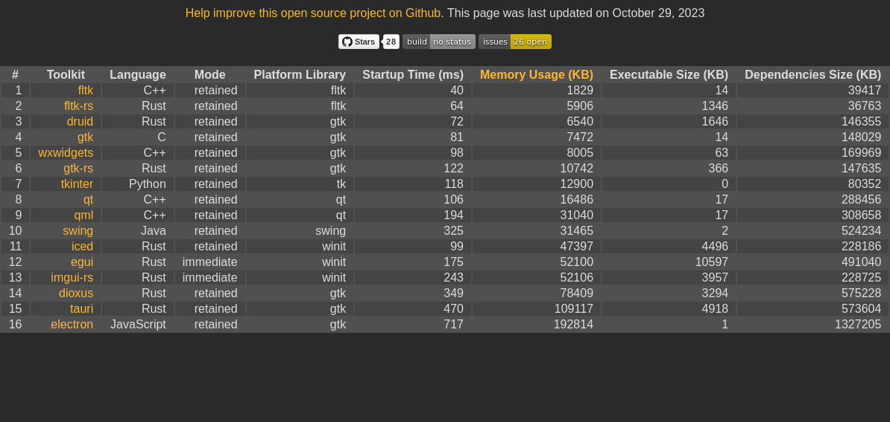
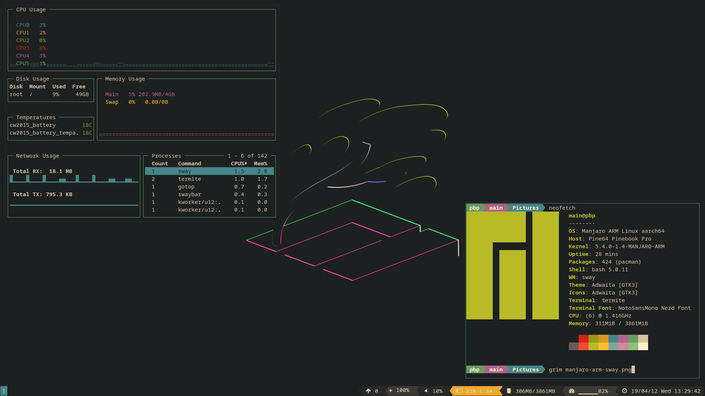

GUI Toolkit Benchmarks


Software developer with deep interests in open-source, rust, low-level programming, and linguistics
Robinhood · Permanent Full-time
Feb 2025 - Present · 1 yr 8 mos
Toronto, Ontario, Canada · Hybrid
Backend engineering for futures and event contracts
♢ Go (Programming Language), Python and +3 skills
Permanent Full-time · 2 yrs 9 mos
Toronto, Ontario, Canada · Hybrid
Mar 2024 - Sep 2024 · 7 mos
Jan 2022 - Feb 2024 · 2 yrs 2 mos
Content access and protection development
♢ Kotlin, Java and +3 skills
Contract Full-time · 10 mos
Greater Toronto Area, Canada
Aug 2021 - Jan 2022 · 6 mos
Apr 2021 - Aug 2021 · 5 mos
Decentralized computing and application development
♢ JavaScript, Amazon Web Services (AWS) and +4 skills
TyltGO (YC S20) · Internship
Apr 2020 - Sep 2020 · 6 mos
Greater Toronto Area, Canada
Full-stack web development
♢ TypeScript, Angular and +1 skill
Think Logistics · Internship
Apr 2018 - Sep 2018 · 6 mos
Vaughan, Ontario, Canada
Desktop application development
♢ WinForms, .NET Framework and +1 skill


Achieving the fastest possible boot times with various Raspberry Pi devices


An in depth cross platform tutorial for SDL2 using Vulkan with examples written in C++


A static, JSless, touch-friendly Lemmy frontend built for legacy web clients and maximum performance


A bare-bones minimal executable application for efi on the x64 platform


Guide for making an Alpine Linux USB with persistence

Benchmarks for measuring the performance of GUI toolkits